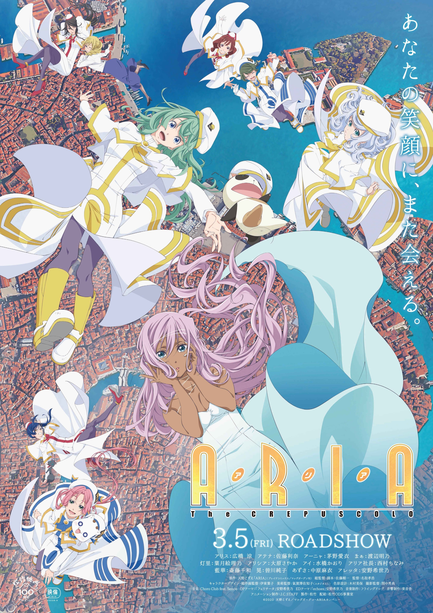
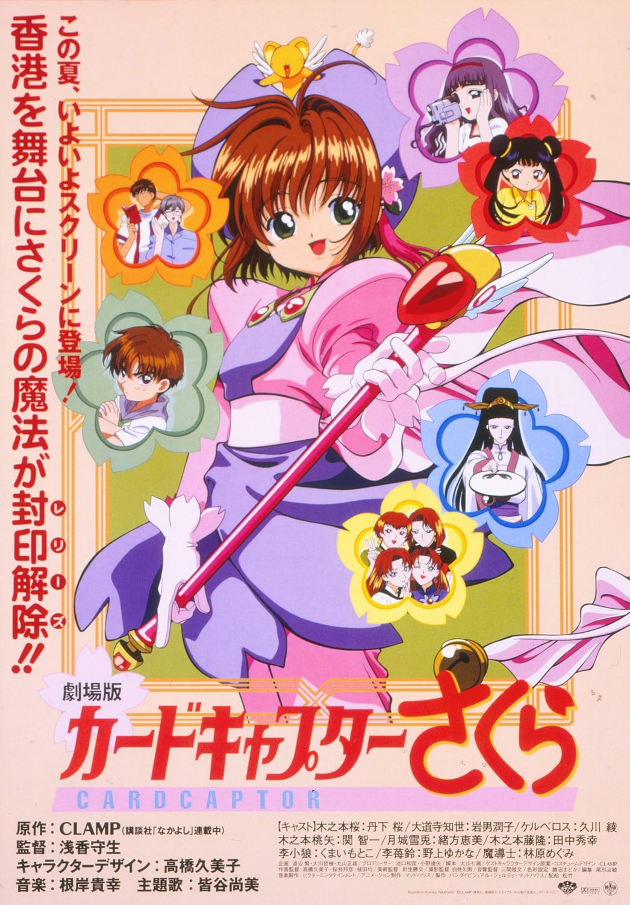
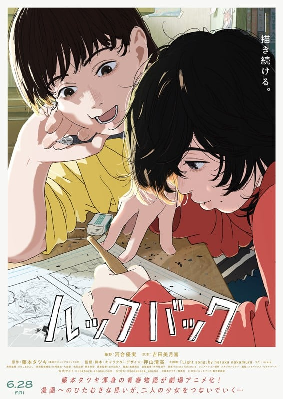
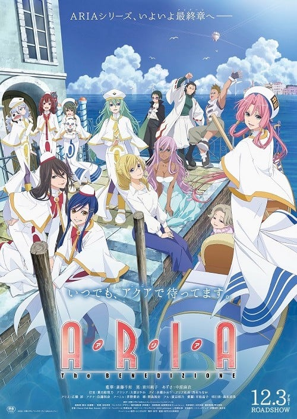
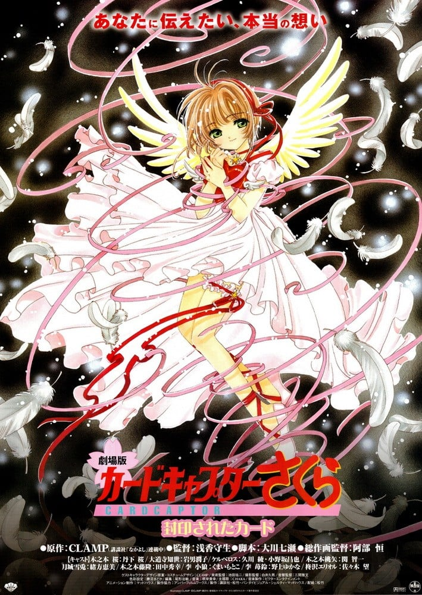
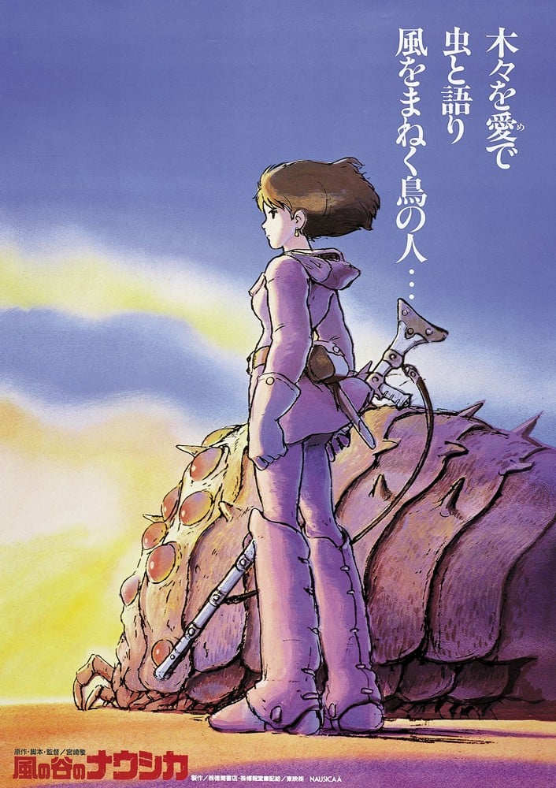

题材交叉
既在「高分治愈系动漫推荐」，也在「高分异世界动漫推荐」。
「哆啦A梦：大雄的绘画奇遇记」（2025）是一部剧场版，由寺本幸代执导，类型包括奇幻、异世界、治愈，评分7.6，在本站出现在8份片单中，例如高分动画剧场版推荐、高分治愈系动漫推荐、高分异世界动漫推荐。页面只做片单对照，不提供播放。哆啦A梦电影45周年纪念之作！新闻中一幅价值数十亿日元的名画引发轰动，而画作残片竟意外坠入到大雄手中！哆啦A梦一行人进入画中的世界并邂逅了神秘少女可蕾雅。在她的请求下，众人前往新闻中的中世纪欧洲“雅托利亚公国”。传说中这里存在一种蕴含神秘力。
按共享片单数排序，用来找和「哆啦A梦：大雄的绘画奇遇记」一起出现的高分动漫。

7.7
7.5
7.8
7.9
7.9
8.3